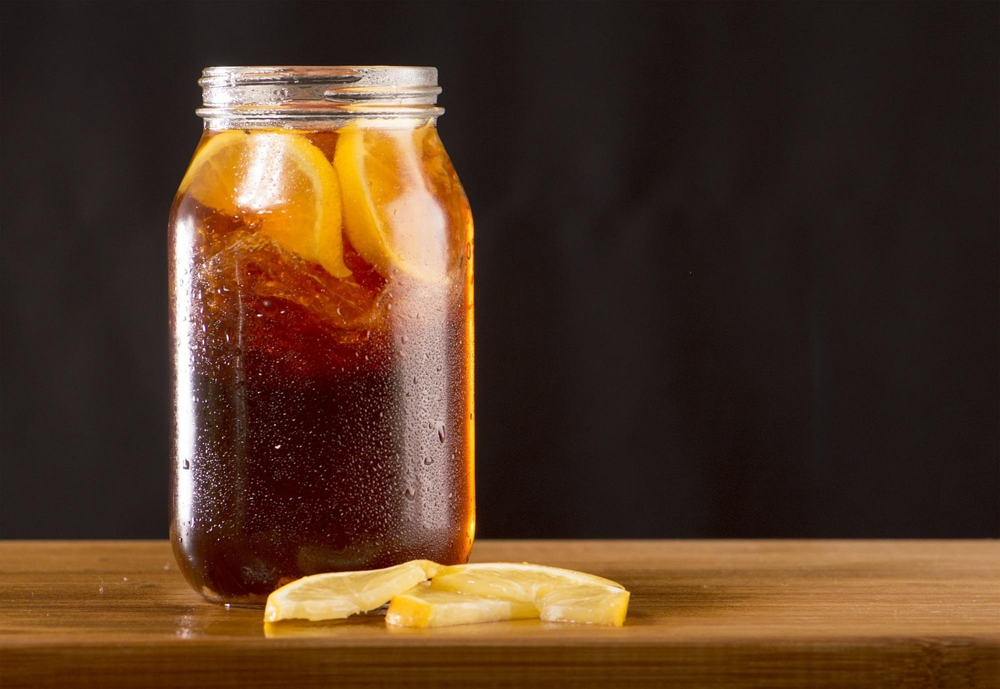

Honey Iced Tea

"Well, if you wanted [honey tea], that's all you had to say!"
Honey and hot drinks are great for the voice, but on a hot summer's day there's nothing better than a nice cold iced tea. During the Draag North American Tour, Black Parade band member, Gerard, was spotted eating a mug of pure honey, most likely to help with that G note! However, we don't recommend drinking pure honey. Instead, here is a refreshing honey inspired iced tea recipe.
Ingredients
- Your tea of choice in tea bags
- Honey
- Lemon juice
- Water
- Salt (optional)
Instructions
- Add the tea, honey, lemon juice, and dash of salt to a pitcher
- Fill pitcher with water, leave room for ice
- Mix
- Let tea steep for 15 minutes and then remove tea bags
- Add ice to the pitcher
- Chill in the fridge
- Or serve immediately
- Enjoy!
Inspired by Venison for Dinner's recipe